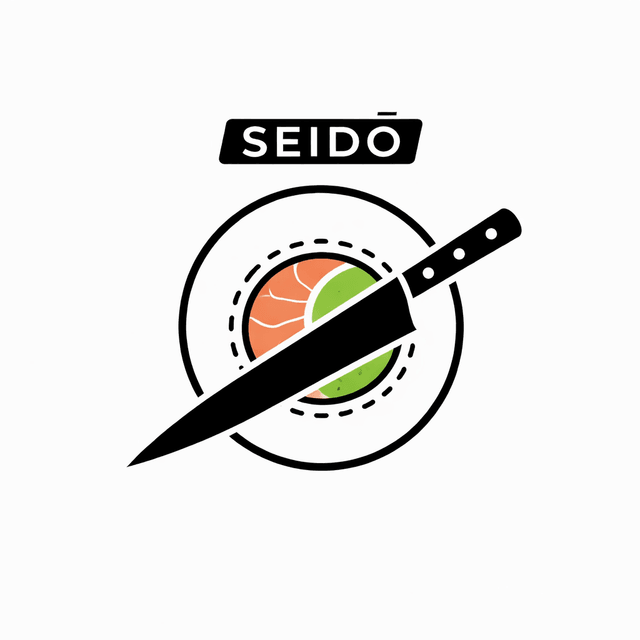

SEIDŌ 精度
Restaurante
SEIDŌ: Precisión culinaria en la cocina japonesa contemporánea
Nuestras cocinas trabajan tecnica, equilibrio y consistencia. Cada plato se disena con intención real de brindar una experiencia de calidad y grata para el paladar. Ingredientes frescos y servicio directo a tu disposición 24/7
Especialidad
Cortes y Platillos
Presicion aplicada al corte para potenciar la experiencia gastronómica del cliente, priorizando la correcta ejecución y salubridad a la hora de manipular tus alimentos, buscamos siempre explotar horizontes nuevos sin salir de las fronteras clásicas de la gastronomía Japonesa

Valores
Principios que orientan la experiencia
- Shokunin: mejora continua en cada preparacion.
- Ma: espacio visual limpio y decisiones sin ruido.
- Omotenashi: hospitalidad respetuosa, clara y eficiente.
- Priorizamos la ejecución con menor fricción posible, mayor precision operativa para asegurar mayor calidad en el producto final.